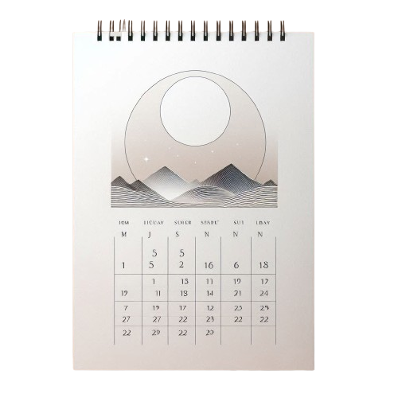

A minimalista falinaptárak azok számára ideálisak, akik a funkcionalitást és az áttekinthetőséget helyezik előtérbe. Letisztult dizájnjuknak köszönhetően könnyen beilleszthetők bármilyen környezetbe, legyen az otthon vagy iroda. A nagy, jól látható dátumok és a bőséges jegyzetelési lehetőség segítenek a mindennapok hatékony megszervezésében és nyomon követésében.
Egyedi falinaptár
Az egyedi falinaptárak tökéletes választást kínálnak azoknak, akik személyre szabott és különleges ajándékot keresnek vagy egyedi megoldást szeretnének otthonukba. Ezek a naptárak teljes mértékben az Ön igényei és ízlése szerint készülnek, lehetőséget biztosítva saját fotók, képek és egyéni dizájnok felhasználására.

Tematikus falinaptár
A tematikus falinaptárak széles választékával várjuk vásárlóinkat, amelyek között mindenki megtalálhatja az ízlésének és igényeinek leginkább megfelelő darabot. Kínálatunkban szerepelnek tájképekkel, állatokkal, művészeti alkotásokkal és városképekkel díszített naptárak is.